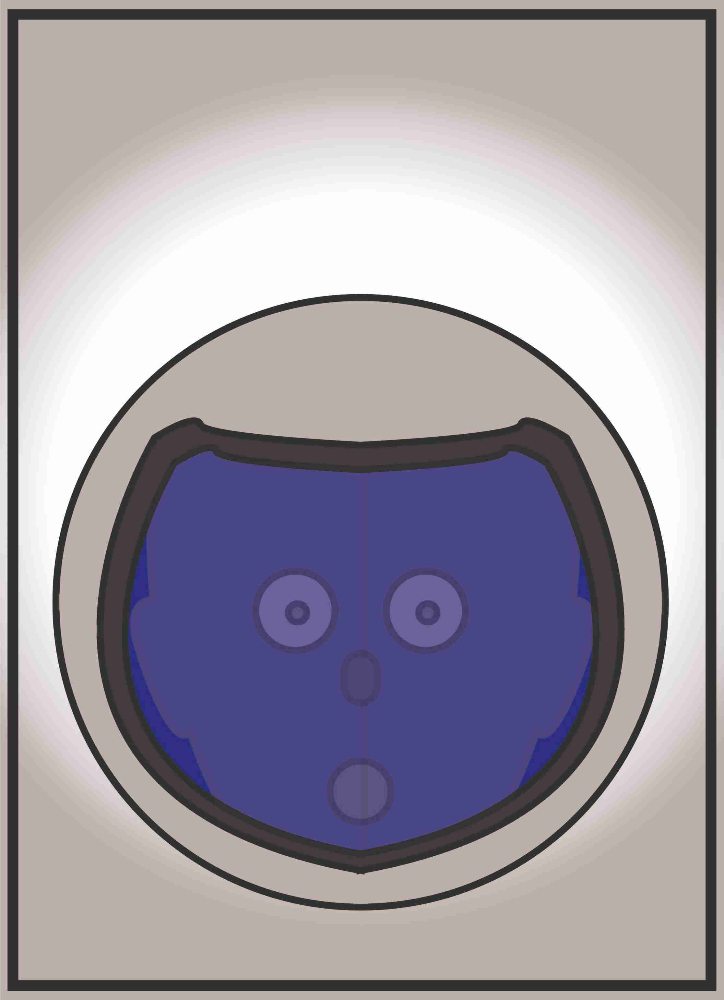

A partir de 7 ans De 2 à 9 joueurs Environ 15 minutes
En plus chaque Copain a une carte Rôle, qu’il gardera secrète jusqu’à qu’il décide de l’utiliser à un moment précis et active un effet spécial unique.
8 cartes Rôle afin d’augmenter ses chances de victoire.

Les cartes Rôle:
Chaque Copain prend aléatoirement une carte Rôle, la regarde pour savoir de quoi il s’agit et la met face cachée devant lui pour que personne d’autre ne sache son Rôle. Les cartes Rôle restantes sont remises dans la boîte sans être regardé.
LE CLOWN
Choisissez un Rôle révèler et utilisez-le à nouveau au moment permis.
LE PIRATE
Au début d’un tour, échangez la place de votre pion avec celui d’un autre.
L'ASTRONAUTE
Quand Cid révèle sa carte Geler, mettez tous les pions d’une pièce avec vous.
LE DRAGON
Si jamais vous deviez être Gelé, vous ne l’êtes pas cette fois-ci.
LA LICORNE
Juste avant le déplacement, choisisez les déplacements de tous le monde.
LE MAGICIEN
Après le déplacement des pions, mettez le vôtre ou vous voulez dans la maison.
LA FEE
Au moment où Cid met sa carte Frappe face cachée, regarder la secrètement.
LE CHEVALIER
Quand quelqu’un révèle son Rôle pour son effet, annulé cet effet.